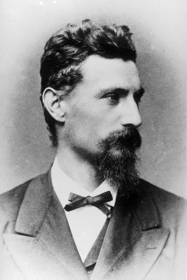

Between 1874 and 1880, Johann Palisa discovered the following minor planets while serving as director of the Imperial & Royal Naval Observatory at Pola (Pula). Select an asteroid to reveal its physical and orbital data from NASA/JPL.

Asteroid Discoveries as the Director of Pula Observatory
Sic Itur Ad Astra
Between 1874 and 1880, Johann Palisa discovered the following minor planets while serving as director of the Imperial & Royal Naval Observatory at Pola (Pula). Select an asteroid to reveal its physical and orbital data from NASA/JPL.